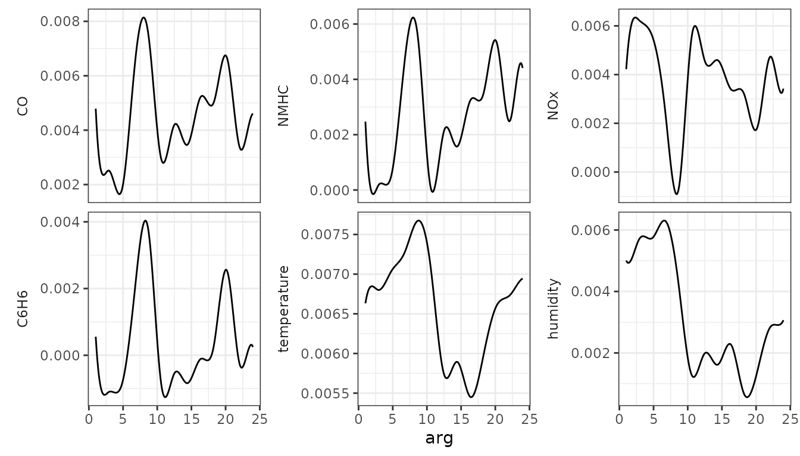
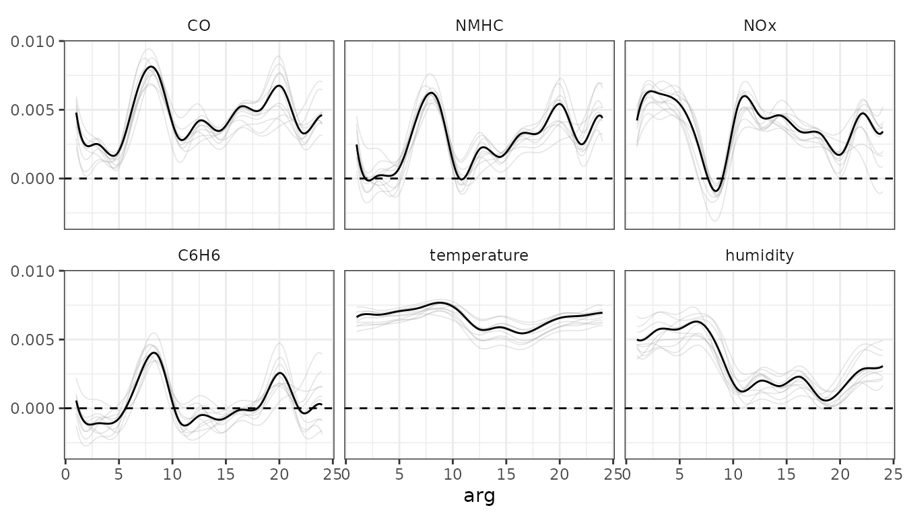
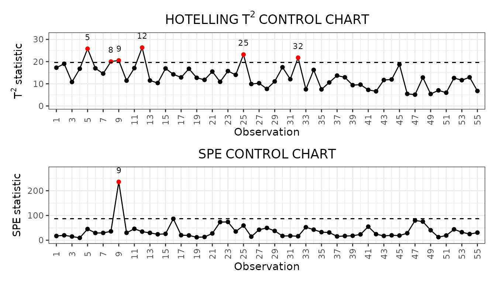
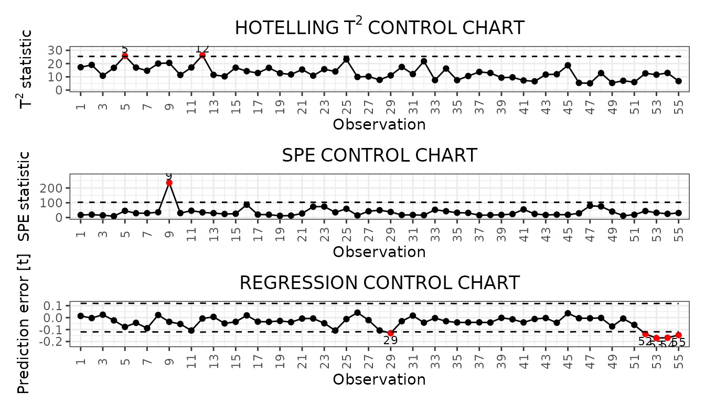
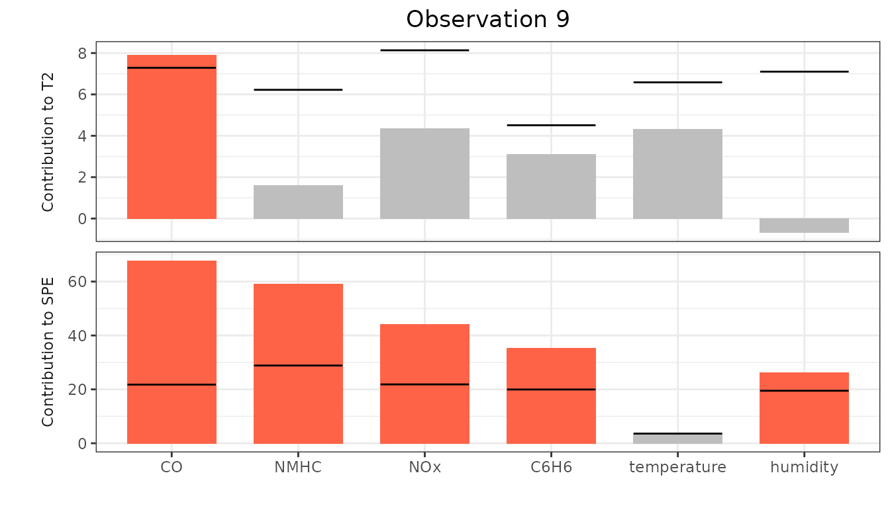
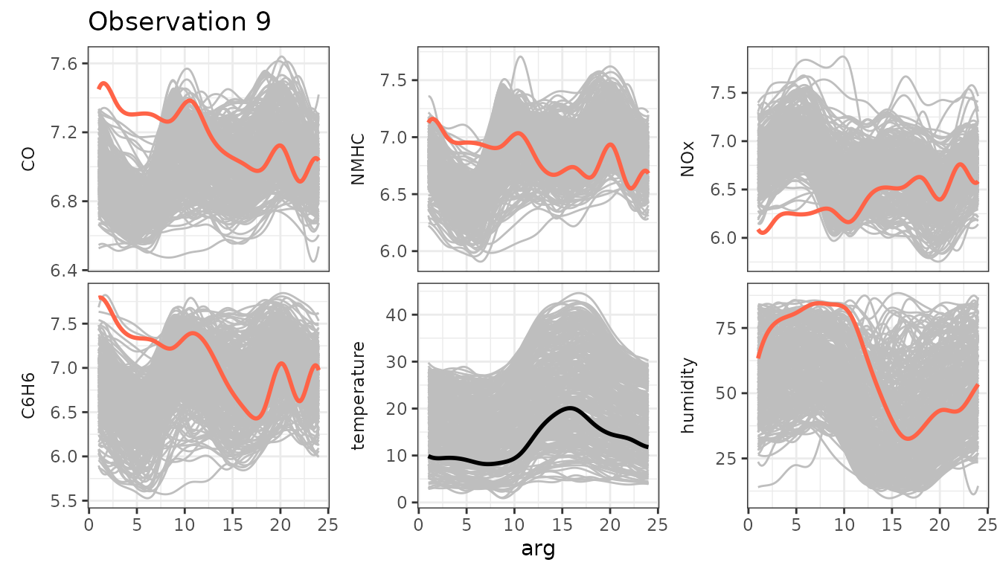
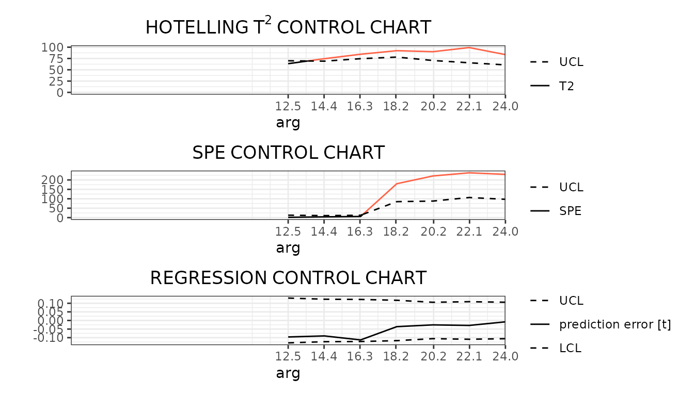

In this vignette we show how to use the funcharts package to apply the methods proposed in Capezza et al. (2020) to build control charts for monitoring a scalar response variable and multivariate functional covariates based on scalar-on-function regression. Let us show how the funcharts package works through an example with the dataset air, which has been included from the R package FRegSigCom and is used in the paper of Qi and Luo (2019). The authors propose a function-on-function regression model of the NO2 functional variable on all the other functional variables available in the dataset. In order to show how the package works, we consider a scalar-on-function regression model, where we take the mean of NO2 at each observation as the scalar response and all other functions as functional covariates.
NOTE: since the objective of this vignette is only to illustrate how the package works, in the following we will use only 15 basis functions and a fixed smoothing parameter to reduce the computational time.
First of all, starting from the discrete data, let us build the multivariate functional data objects of class mfd, see vignette("mfd").
library(funcharts)
#> Loading required package: fda
#> Loading required package: splines
#> Loading required package: Matrix
#> Loading required package: fds
#> Loading required package: rainbow
#> Loading required package: MASS
#> Loading required package: pcaPP
#> Loading required package: RCurl
#>
#> Attaching package: 'fda'
#> The following object is masked from 'package:graphics':
#>
#> matplot
#> Loading required package: dplyr
#>
#> Attaching package: 'dplyr'
#> The following object is masked from 'package:MASS':
#>
#> select
#> The following objects are masked from 'package:stats':
#>
#> filter, lag
#> The following objects are masked from 'package:base':
#>
#> intersect, setdiff, setequal, union
#> Loading required package: ggplot2
data("air")
fun_covariates <- names(air)[names(air) != "NO2"]
mfdobj_x <- get_mfd_list(air[fun_covariates],
grid = 1:24,
n_basis = 15,
lambda = 1e-2)Then, we extract the scalar response variable, i.e. the mean of NO2 at each observation:
y <- rowMeans(air$NO2)In order to perform the statistical process monitoring analysis, we divide the data set into a phase I and a phase II dataset.
rows1 <- 1:300
rows2 <- 301:355
mfdobj_x1 <- mfdobj_x[rows1]
mfdobj_x2 <- mfdobj_x[rows2]
y1 <- y[rows1]
y2 <- y[rows2]We can build a scalar-on-function linear regression model where the response variable is a linear function of the multivariate functional principal components scores. The components to retain in the model can be selected with selection argument. Three alternatives are available (default is variance):
tot_variance_explained,single_min_variance_explained. This criterion is used in Capezza et al. (2020).
mod <- sof_pc(y = y1,
mfdobj_x = mfdobj_x1,
selection = "PRESS",
single_min_variance_explained = .01)As a result you get a list with the original data used for model estimation, the result of applying pca_mfd on the multivariate functional covariates, the estiamted regression model. It is possible to plot the estimated functional regression coefficients, which is also a multivariate functional data object of class mfd:
plot_mfd(mod$beta)
Moreover bootstrap can be used to obtain uncertainty quantification:
plot_bootstrap_sof_pc(mod, nboot = 10)
We can build control charts to monitor both functional covariates and the scalar response. We can either monitor the functional covariates alone (unsupervised monitoring) or the functional covariates and the scalar response together (supervised monitoring), as performed in Capezza et al. (2020).
The function control_charts_pca provides a data frame with all the information required to plot the desired control charts on multivariate functional data, based on the Hotelling’s T^2 and the squared prediction error statistics (see Capezza et al. (2020) and Centofanti et al. (2020)). Among the arguments, you can pass a tuning_data set, that is not used for model estimation/training, but is used only to estimate control chart limits. If this data set is not provided, control chart limits are calculated on the basis of the training data. The argument newdata contains the phase II data set of observations of multivariate functional covariates, that are to be monitored with the control charts. The function plot_control_charts returns a ggplot with the control charts.
cclist_pca <- control_charts_pca(pca = mod$pca,
components = mod$components,
newdata = mfdobj_x2)
plot_control_charts(cclist_pca)
The function control_charts_sof_pc provides a data frame with all the information required to plot the desired control charts. In addition to the Hotelling’s T^2 and the squared prediction error statistics obtained using control_charts_pca (see previous section), this function provides the scalar regression control charts, which also monitors the prediction error on the response variable. The same function plot_control_charts can be used to obtain ggplot with the three control charts. As for unsupervised monitoring, you can pass a tuning_data set (see previous section).
cclist_sof_pc <- control_charts_sof_pc(mod = mod,
y_test = y2,
mfdobj_x_test = mfdobj_x2)
plot_control_charts(cclist_sof_pc)
Once an out-of-control observation is identified in a control chart, one can obtain the contribution of the functional covariates to the monitoring statistics to understand which variable was possibly responsible of the anomalous observation.
We can get the out of control observations using which_ooc. In the following, we focus on the supervised monitoring.
ooc_index <- which_ooc(cclist_sof_pc)
ooc_index
#> $T2
#> n id
#> 1 5 305
#> 2 12 312
#>
#> $spe
#> n id
#> 1 9 309
#>
#> $y
#> n id
#> 1 29 329
#> 2 52 352
#> 3 53 353
#> 4 54 354
#> 5 55 355From the control charts it is possible to see some phase II observations out of control. For example, let us consider observation 9. We can exploit the contribution plots using the function cont_plot to identify the variables responsible of the anomaly. The contributions are plotted as bar plots, against upper control limits estimated empirically on the training data.
cont_plot(cclist_sof_pc, 9) Finally, we can also plot any multivariate functional observation against a reference data set by using the function plot_mon:
plot_mon(cclist_sof_pc, mfdobj_x1, mfdobj_x2[9]) This helps to understand which part of the observations were anomalous. Variables exceeding contribution plot limits are coloured in red.
In Capezza et al. (2020), we have also implemented real-time monitoring (both unsupervised and supervised). Given the domain interval \((a, b)\) of the functional data, for each current domain point \(k\) to be monitored, it filters the available functional data in the interval \((a,k)\). The function get_mfd_list_real_time gives a list of functional data objects each evolving up to the intermediate domain point \(k\).
mfd_list <- get_mfd_list_real_time(
data_list = air[fun_covariates],
grid = 1:24,
n_basis = 15,
lambda = 1e-2,
k_seq = seq(0.5, 1, length.out = 7))
mfd_list1 <- lapply(mfd_list, function(x) x[rows1])
mfd_list2 <- lapply(mfd_list, function(x) x[rows2])Then, the function sof_pc_real_time applies the function sof_pc to each element in mfd_list1.
mod_list <- sof_pc_real_time(y = y1, mfd_real_time_list = mfd_list1)Then, we can use control_charts_sof_pc_real_time to apply control_charts_sof_pc to each element in mod_list and produce control charts for the phase II data mfd_list2 and y2.
cc_list_real_time <- control_charts_sof_pc_real_time(
mod_list = mod_list,
y_test = y2,
mfdobj_x_test = mfd_list2
)Finally, we can plot the real-time control charts for a single observations, giving for each \(k\) the monitoring statistics calculated on the data observed in \((a, k)\). Here follows an example showing the real time control charts for a single phase II observation (id number 9).
plot_control_charts_real_time(cc_list_real_time, id_num = 9)